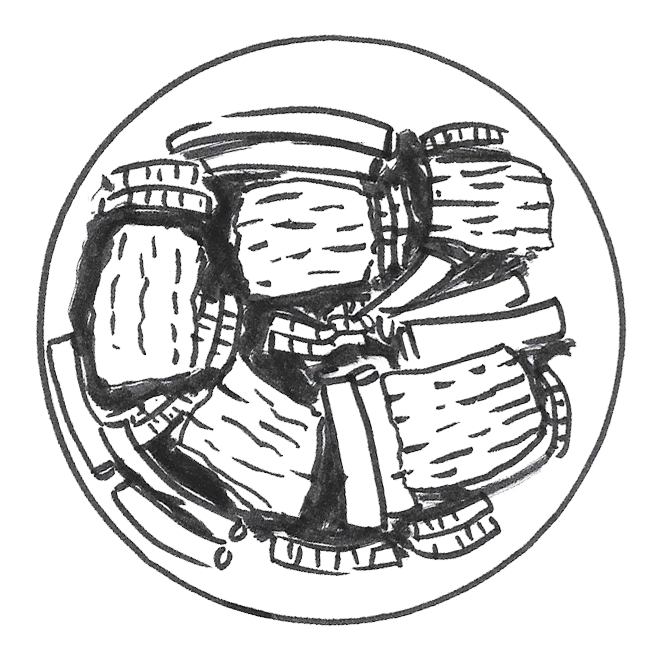

our food is ready for you to learn about it!

soy sauce beef
source of health, veggies

a stable, a comfort
source of health, veggies
soy sauce beef
soy sauce beef
[X]
– –start of the quiz
– – question # two
– – halfway through
– – question # four
– – last question
A visual explanation of what it is to be Latina (Costa Rican) & Chinese (Cantonese) through meals and memories
soy sauce beef
source of health, veggies
a stable, a comfort
source of health, veggies
soy sauce beef
soy sauce beef
I first started to make this dish once I moved to New York for college, as it was an easy way to safely cook beef and I was able to mix it with sauces that I already had at home. although pork and chicken are eaten more often in Chinese households, in Costa Rica and the USA beef is a lot more common choice of protein. thus, this dish is all about the combination of beef and savoury chinese flavours.
this is part of "A TRADITIONAL CANTONESE MEAL"
find the recipe here
This has always been in the table, whether it was my own home, 爺爺奶奶家 & 婆婆公公家 (grandparent's house) or going out to eat to our usual weekend Chinese restaurant. as a kid I wouldn't eat it, thinking the texture wasn't appetizing and that it was bland. but now if I don't eat veggies with my meals I feel that a part of it is missing. Napa cabbage is my favourite chinese vegetables as it has the perfect mix of soft leaves and crunch stem.
this is part of "A TRADITIONAL CANTONESE MEAL"
find the recipe here
When i was younger, I was a very picky eater and if there wasn't any dishes of my liking, I will only eat bowls of white rice [yes, just plain rice]. I'm that person that needs to have rice at least once a day, and if I don't, it's okay. But, I will certainly feel the need to have some. Jasmine rice is the perfect base to any cantonese meal.
this is part of "A TRADITIONAL CANTONESE MEAL"
find the recipe here
– –comienzo del quiz
– – pregunta # dos
– – mita del camino
– – pregunta # cuatro
– – última pregunta
Una exploración creativa de que significa ser Latina [Costa Ric] & China [Cantón] por medio de comidas y memorias
lomo salteado
fuente de nutrición, vegetales
esencial, siempre ahí
fuente de nutrición, vegetales
lomo salteado
lomo salteado
fuente de nutrición, vegetales
lomo salteado
lomo salteado
cuando me mudé a Nueva York para comenzar mis estudios universitarios, comencé a cocinar mucho y este es uno de los primeros platillos que cociné. ya que es una forma fácil y segura de cocinar la carne de res, con ingredientes que ya tenía en la casa. aunque el cerdo y el pollo son más frecuentes en comidas chinas y costarricences, la carne de res es mucho más accesible y preferida por los estadounidenses. por ende, este platillo es la combinación de carne de res con sabores únicos a la cultura cantonés.
esto es parte de "UNA COMIDA TRADICIONAL CANTONES"
encuentra la receta aquí
los vegetales al wok, son una constante en la mesa, sea mi casa o la de 爺爺奶奶 & 婆婆公公 (mis abuelos), o inclusive en el restaurante Chino, siempre van a haber vegetales. de niña nunca comía los vegetales, no me gustaba la textura de ella y no me sabía a nada gustoso. pero ahora, si no como vegetales con mi almuerzo o cena, siento que algo falta. la mostaza china es una de mis vegetales favoritos, ya que es una gran combinación de suaves hojas y crujientes tallos.
esto es parte de "UNA COMIDA TRADICIONAL CANTONES"
encuentra la receta aquí